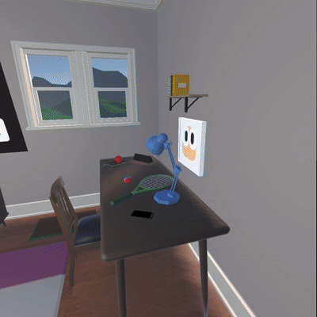
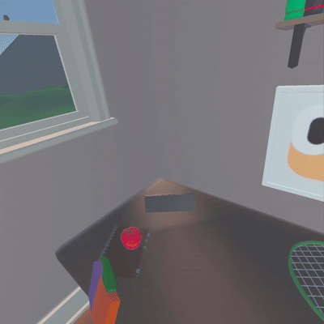

I used the Unity Learn website to learn about using the
Untiy Game Engine as well as downloading the relavent software
for the development process. The course I enrolled in was the
VR Development pathway. I used a Meta Quest 3
headset with a USB 3.0 type A to type C cable connected to my laptop.
The examples shown below will be from the VR Room
starter project that is done throughout the course. You can download apk file of the final build
by clicking this link.
Locomotion
Fig 1a. Teleportation movement
Fig 1b. Continuous movement
I explored the different locomotion methods that were offered
in the OpenXR plugin. The two main modes of locomotion are
teleportation and continuous movement
Teleportation movement is a type of locomotion where
the user points at where they want to go to and initiate an
action (e.g a button press) and instantly move to that spot.
You can see an example at Fig 1a above. The user has
ray that is being cast from their hand. When it hits an
area that can be teleported to (the mats in this case), it
shows a recitle. Then when the user presses the trigger button
they will instantly teleport to that area. Furthermore, you
can see that there is a big mat and several small mats. The
big mat is a Teleportation Area, where the
user can choose which area they want to teleport to on the area.
However, the smaller mats are Teleportation Anchors,
where the user will teleport to a predefined area, rotation or both
on the surface.
Continuous movement is a type of locomotion where the
user will smoothly move from one point to another while recieving
an analog input (e.g. an thumbstick). You can see an example of This
from Fig 1b above. The user is able to smoothly move in
any direction, including backwards. This is the closest to the
locomotion system used in traditional flat-screen first-person games.
There are several other locomotion types such as Scripted Movement,
where the user moves to a position that is predefined by a script,
Room-Scale, where the user freely moves within the
confines of their physical environment, and many more. In fact, I
used custom locomotion type in my project, where I created a
script to emulate zero-gravity movement.
If you were wondering why teleportation movement exists at all, it is to combat
Virtual Reality Sickness, which I will explain
in the next section.
Virtual Reality Sickness
Virtual Reality Sickness is a phenomenon that occurs when
your brain recieves conflicting signals about your body's movement
(i.e. Movement in the virtual world while standing still in the real world)
which can cause symptoms similar to motion sickness such as
nasea, headache, fatigue and vomiting.
Unfortunately, virtual reality sickness is a major barrier for many
people trying to use virtual reality. In fact, I have had my own experience
with this sickness. I was playing Pavlov Shack, a first-person
shooter on the Meta Quest Platform. Before this game, Because of a few factors
such as my general inexperience with smooth movement, low framerate of the game
and more, I had a bad headache after playing the game for a while and had to
lie down for several hours! If it was even a little worse I may have
even taken some Paracetamol. Hence, I know how important it is to
make your games accessible and comfortable to play in.
There are several way to combat virtual reality sickness. The easiest way is to
remove motion altogether. This can be done through Teleporation Movement
as mentioned above, and Snap Turning which will be in the next
section.
Turning

Fig 2a. Snap movement
Fig 2b. Smooth movement
Even though the users can physically move their head in real life,
sometimes it can be inconvenient to do so. For example, if they are
sitting down it can be difficult to look backwards. Hence, I explored
the different turning systems in the OpenXR plugin, mainly the
Snap and Smooth turning systems.
Snap Turning is a type of turning system where the
user turns based on predefined increments based on the user
input (e.g thumbstick). This can be seen in Fig 2a.
Smooth Turning is a type of turning system where the
user smoothly rotatates based on an analog input (e.g thumbstick). This
is the closest to the turning system used in traditional flat-screen
first-person game. This can be seen in Fig 2b.
The reason Snap Turning exists is similar to the reason
Teleporation Movement exists, which is to combat
Virtual Reality Sickness, as mentioned previously.
Grabbable Objects
Fig 3a. Racket hitting a ball

Fig 3b. Turning the cover page of a book
In the virtual world, interactions with objects can be as simple as reaching out and pressing a button
to grab it. Hence, grabbing objects can be very intuitive to people new to Virtual Reality.
Grabbing objects can also lead to more complex interactions as the objects themselves can have their own
behaviour. For example, in Fig 3a. The user can hit and bounce the ball while holding the racket.
And in Fig 3b. The cover page of the book can be flipped while grabbing the book. Lastly,
while not shown in the clips, objects can also be thrown when let go at certain velocities.
Distance Grabbing is another way to grab objects. Instead of bringing their hand close to the
object to grab it, users can point at a far away object using a ray cast from their hand to grab the object. This can
be an accessibility feature for users who have a small play space which makes it hard for them to reach out for an object.
Sockets
Fig 4a. Socket used to hold a painting
Fig 4b. Player using a socket on the head to wear a hat
Sockets are targets for other interactables (such as grabble objects) to snap onto. Sockets are an
incredibly useful and powerful tool as they be used to define a specific area an object can be placed.
For example, in Fig 4a. The painting can be removed and placed onto the wall. Think kind of interaction can
be useful for puzzles where the object needs to be slot at a specific area, or a jigsaw puzzle
with a grid of sockets.
Sockets can also be placed on the player model itself, creating opportunities for customising the user avatar. For example
in Fig 4b. The user picks up the hat model from the hook and places it on their head, which is a socket, allowing
them to wear the hat. This can also allow other interesting features, such as holstering a gun on the player, or having a
removable backpack that acts as the player inventory.
Object Interactions with Events
Fig 5a. Remote turns on the television
Fig 5b. Watering can pouring water when tilted
More complex behaviours can be created with interactable objects using events.
Button presses can cause a certain event to trigger. For example in Fig 5a. Pressing a button on
the controller while holding the remote toggles the video playing on the television to be on or off. Other examples are
shooting a gun on a button press, or a controlling a drone with a remote.
Events can also be triggered due to the transform of an object. For example in Fig 5b. Water is poured of the
watering can when it is held beyond a certain angle. Other examples include inflicting damage when a sword is swung at a
beyond a specific velocity, or lighting a candle when it is brought near a flame.
User Interface
Fig 6.
User interfaces in virtual reality are in the World space as opposed to being overlayed onto the camera.
This is because the user cannot interact with the screen itself as it is essentialy the 'eyes' of the user. Instead, they
can physically interact with an graphical interface that is placed directly in the world.
For example in Fig 6. the user is interacting with buttons by pointing with a ray casted from the hand and
pressing a button on their controller. However while in the video the user interface is simple and two-dimensional, it
is possible and more interesting to create a user interface using three-dimensional interface objects such as keypads
or pressable buttons.